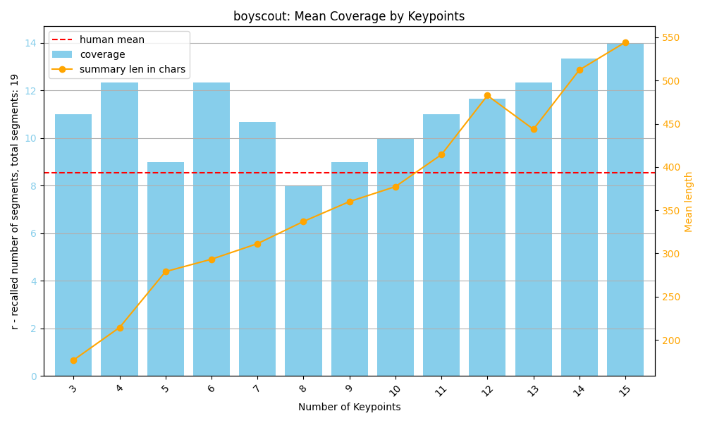
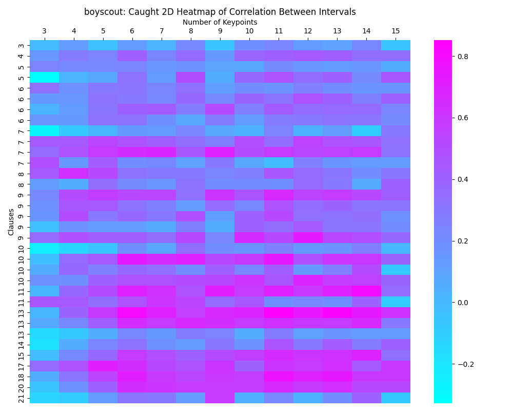
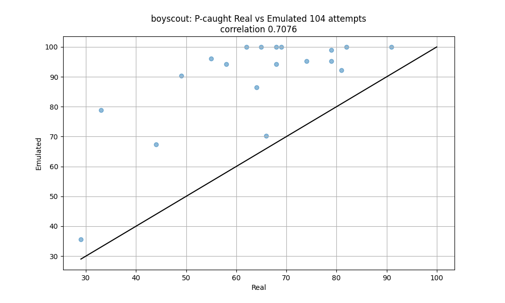
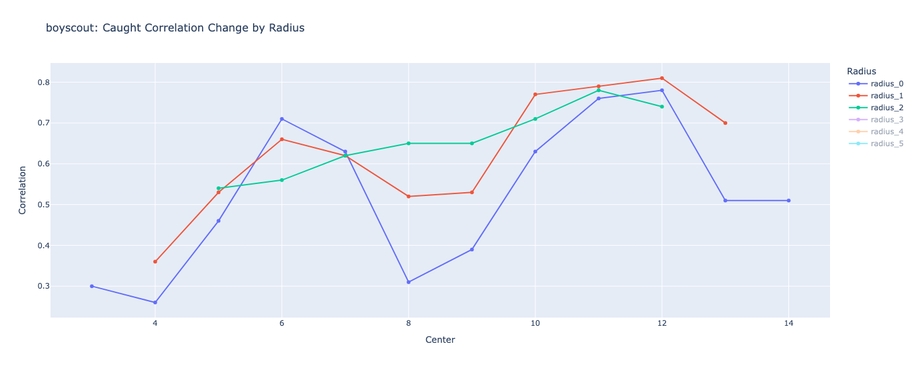

Toward emulating human recall
Emulation by LLM
2D P-rec histogram
Mean coverage by keypoints

P-rec correlation per keypoint

Emulation prec correlation
Emulation prec scatter plot

Emulation prec by gpt4o correlation moving
average
Caught-2d-histogram

Pcaught emulation scatter plot

Pcaught correlation with emulation plot

P-caught real vs all gpt4o emulated scatter

Emulation pcaught by gpt4o correlation
moving average

Caught real vs keypoints generated by gpt4o
Correlation vs gpt4o keypoints